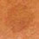
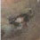
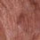
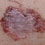
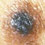
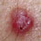
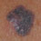
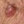
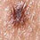

Virtual Dermatoscope

- Brown lesion on a 66 year old woman’s forehead
- Pigmented lesion on the foot of a 58 year old man
- Lesion on the face of an 80 year old man
- A lesion on a 58 year old woman’s thigh
- A pigmented lesion on a 36 year old man’s chest
- A pink nodule on a young man’s back
- A pigmented lesion on an elderly woman’s abdomen
- Small pink lesion on a 47 year old man’s leg
- A 50 year old man with fair skin has a flat pigmented skin lesion on his abdomen